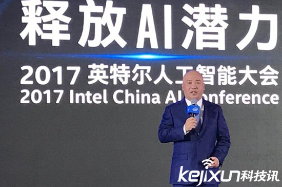

英特尔召开人工智能大会 释放AI潜力
网络
11月15日消息，2017英特尔人工智能大会在京开幕。“如果AI技术没有运用到实际中，那意义就不大，最关键是如何释放价值”英特尔全球副总裁兼中国区总裁杨旭称。其指出不能做埃菲尔铁塔式的研发，公司任何技术要广泛合作，要在市场中验证成功。
11月15日消息，2017英特尔人工智能大会在京开幕。“如果AI技术没有运用到实际中，那意义就不大，最关键是如何释放价值”英特尔全球副总裁兼中国区总裁杨旭称。其指出不能做埃菲尔铁塔式的研发，公司任何技术要广泛合作，要在市场中验证成功。
实际上，在过去一年中，英特尔正在多个领域寻求合作伙伴，其自身也投资了数十家创业公司，今年的投资总金额已超过5.66亿美元。不久前，又有15家科技创业公司获得了超过6000万美元的新投资。
就中国企业而言，英特尔目前已向140多家中国科技公司投资超过19亿美元，其中近40家公司已上市或被收购。其投资在中国的重点领域包括AI、无人驾驶技术、VR、5G、大数据分析等。
如今AI技术已被广泛应用到多个行业，例如在汽车领域中的辅助驾驶；零售行业中的个性化服务等。这些技术，均是通过计算的传感器，在收集数据后提供的准确信息。目前，AI尚处起步阶段且过程复杂，海量数据产生后，需要强大的计算能力加以处理。
“但光有计算能力还不够，还需要网络传输能力，来支撑AI的应用”，杨旭说，英特尔正在全线布局，从产业合作到推动应用，从中寻求突破口，“我们不要做埃菲尔铁塔式的研发，任何技术要广泛合作，要在市场验证成功”。